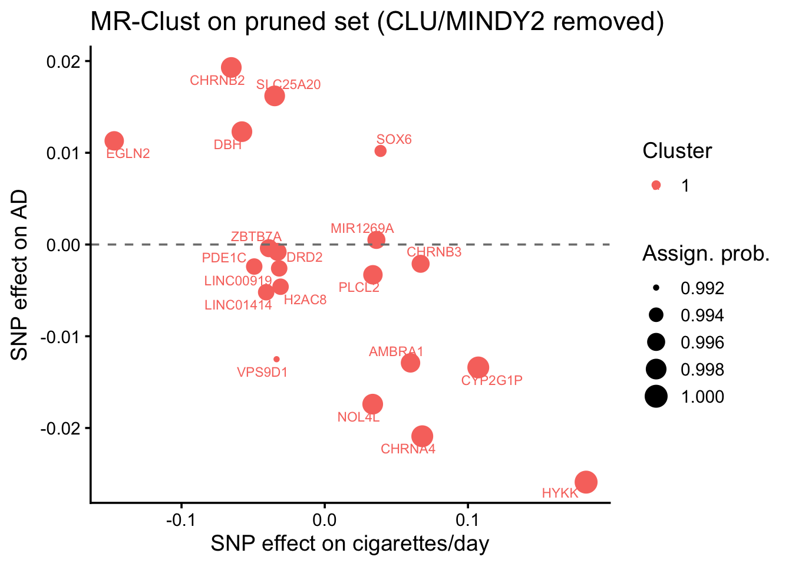

Show the code
library(mrclust)
library(knitr)
source(here::here("R", "helpers.R"))
cfg <- load_config()
set.seed(cfg$seed)library(mrclust)
library(knitr)
source(here::here("R", "helpers.R"))
cfg <- load_config()
set.seed(cfg$seed)A genuine receptor-mediated drug signal should concentrate in a cluster of SNPs enriched for nAChR loci, rather than smearing uniformly across all smoking instruments. We run MR-Clust on the smoking→AD instruments, annotate each SNP to a mechanism bin, and ask (hypergeometric test) whether any protective cluster is enriched for nAChR_pharmacodynamic genes.
We run MR-Clust twice: (1) the full 22-SNP set, to confirm the original discovery that CLU/MINDY2 form a distinct risk cluster; and (2) the pruned canonical set (those two removed; Layer 0b), to ask whether new substructure emerges once the dominant pleiotropy outliers are gone.
run_mrclust <- function(h) {
cl <- mr_clust_em(
theta = h$beta.outcome / h$beta.exposure,
theta_se = abs(h$se.outcome / h$beta.exposure),
bx = h$beta.exposure, by = h$beta.outcome,
bxse = h$se.exposure, byse = h$se.outcome,
obs_names = h$SNP)
assign <- cl$results$best |>
as_tibble() |>
dplyr::rename(SNP = observation) |>
left_join(h |> dplyr::select(SNP, nearest_gene, mechanism, beta.exposure, beta.outcome),
by = "SNP")
enrich <- assign |>
filter(!is.na(cluster), cluster != "Null") |>
group_by(cluster) |>
summarise(n_in_cluster = n(),
n_nachr = sum(mechanism == "nAChR_pharmacodynamic"),
genes = paste(sort(unique(nearest_gene)), collapse = ", "),
mean_theta = mean(theta, na.rm = TRUE), .groups = "drop") |>
rowwise() |>
mutate(p_enrich = phyper(n_nachr - 1,
sum(assign$mechanism == "nAChR_pharmacodynamic"),
nrow(assign) - sum(assign$mechanism == "nAChR_pharmacodynamic"),
n_in_cluster, lower.tail = FALSE),
direction = ifelse(mean_theta < 0, "protective", "risk")) |>
ungroup()
list(assign = assign, enrich = enrich)
}h_full <- read_csv(here::here("results", "baseline_harmonised_annotated.csv"))
full <- run_mrclust(h_full)
write_csv(full$assign, here::here("results", "mrclust_assignments_full.csv"))
write_csv(full$enrich, here::here("results", "mrclust_enrichment_full.csv"))
full$enrich |> kable(caption = "Full-set clusters (note the CLU/MINDY2 risk cluster)", digits = 3)| cluster | n_in_cluster | n_nachr | genes | mean_theta | p_enrich | direction |
|---|---|---|---|---|---|---|
| 1 | 2 | 0 | CLU, MINDY2 | 1.242 | 1.000 | risk |
| 2 | 20 | 4 | AMBRA1, CHRNA4, CHRNB2, CHRNB3, CYP2G1P, DBH, DRD2, EGLN2, H2AC8, HYKK, LINC00919, LINC01414, MIR1269A, NOL4L, PDE1C, PLCL2, SLC25A20, SOX6, VPS9D1, ZBTB7A | -0.070 | 0.662 | protective |
h <- read_csv(here::here("results", "baseline_harmonised_pruned.csv"))
pruned <- run_mrclust(h)
assign <- pruned$assign
enrich <- pruned$enrich
write_csv(assign, here::here("results", "mrclust_assignments.csv"))
write_csv(enrich, here::here("results", "mrclust_enrichment.csv"))
assign |>
dplyr::select(SNP, nearest_gene, mechanism, cluster, probability, cluster_mean = theta) |>
arrange(cluster, -probability) |>
kable(caption = "Pruned-set SNP→cluster assignments", digits = 3)| SNP | nearest_gene | mechanism | cluster | probability | cluster_mean |
|---|---|---|---|---|---|
| rs11852372 | HYKK | nAChR_pharmacodynamic | 1 | 1.000 | -0.142 |
| rs2273500 | CHRNA4 | nAChR_pharmacodynamic | 1 | 0.999 | -0.307 |
| rs56113850 | CYP2G1P | nicotine_metabolism | 1 | 0.999 | -0.125 |
| rs2072659 | CHRNB2 | nAChR_pharmacodynamic | 1 | 0.998 | -0.296 |
| rs2424888 | NOL4L | other_pleiotropic | 1 | 0.998 | -0.520 |
| rs3025383 | DBH | reward_behavioral | 1 | 0.998 | -0.213 |
| rs7431710 | SLC25A20 | other_pleiotropic | 1 | 0.998 | -0.463 |
| rs2084533 | PLCL2 | other_pleiotropic | 1 | 0.997 | -0.098 |
| rs34406232 | EGLN2 | nicotine_metabolism | 1 | 0.997 | -0.077 |
| rs75494138 | AMBRA1 | other_pleiotropic | 1 | 0.997 | -0.215 |
| rs11725618 | MIR1269A | other_pleiotropic | 1 | 0.996 | 0.014 |
| rs58379124 | CHRNB3 | nAChR_pharmacodynamic | 1 | 0.996 | -0.031 |
| rs7928017 | DRD2 | reward_behavioral | 1 | 0.996 | 0.024 |
| rs895330 | ZBTB7A | other_pleiotropic | 1 | 0.996 | 0.010 |
| rs1579233 | LINC00919 | other_pleiotropic | 1 | 0.995 | 0.082 |
| rs215600 | PDE1C | other_pleiotropic | 1 | 0.995 | 0.049 |
| rs790564 | LINC01414 | other_pleiotropic | 1 | 0.995 | 0.127 |
| rs806798 | H2AC8 | other_pleiotropic | 1 | 0.995 | 0.149 |
| rs7951365 | SOX6 | other_pleiotropic | 1 | 0.993 | 0.262 |
| rs4785587 | VPS9D1 | other_pleiotropic | 1 | 0.992 | 0.372 |
enrich |> kable(caption = "Pruned-set clusters + nAChR enrichment (hypergeometric)", digits = 4)| cluster | n_in_cluster | n_nachr | genes | mean_theta | p_enrich | direction |
|---|---|---|---|---|---|---|
| 1 | 20 | 4 | AMBRA1, CHRNA4, CHRNB2, CHRNB3, CYP2G1P, DBH, DRD2, EGLN2, H2AC8, HYKK, LINC00919, LINC01414, MIR1269A, NOL4L, PDE1C, PLCL2, SLC25A20, SOX6, VPS9D1, ZBTB7A | -0.0699 | 1 | protective |
library(ggrepel)
ggplot(assign, aes(x = beta.exposure, y = beta.outcome, colour = factor(cluster))) +
geom_point(aes(size = probability)) +
geom_text_repel(aes(label = nearest_gene), size = 3, max.overlaps = 15) +
geom_hline(yintercept = 0, linetype = "dashed", colour = "grey50") +
theme_classic(base_size = 14) +
labs(x = "SNP effect on cigarettes/day", y = "SNP effect on AD",
colour = "Cluster", size = "Assign. prob.",
title = "MR-Clust on pruned set (CLU/MINDY2 removed)")
n_substantive <- nrow(enrich) # non-null clusters in pruned set
prot_enriched <- enrich |> filter(direction == "protective", p_enrich < 0.05)
new_risk <- enrich |> filter(direction == "risk")
msg <- sprintf("pruned set: %d non-null cluster(s); %d new risk cluster(s); nAChR enrichment min p=%.3g",
n_substantive, nrow(new_risk),
suppressWarnings(min(enrich$p_enrich)))
log_decision("L1", "MR-Clust substructure on pruned canonical set",
sprintf("%d clusters", n_substantive), msg)
cat(msg, "\n")pruned set: 1 non-null cluster(s); 0 new risk cluster(s); nAChR enrichment min p=1 If protection concentrates in an nAChR-enriched cluster, Layer 2 quantifies the bin-stratified effects; otherwise the signal is more consistent with a dose/combustion mechanism and the drug-target framing should be reconsidered.